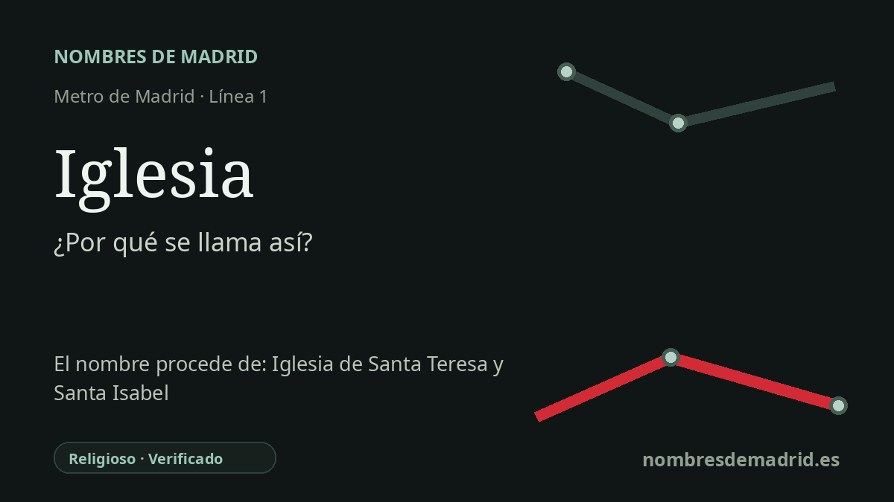

Publicado el · Investigación de Nombres de Madrid · Cómo verificamos cada origen · 6 fuentes consultadas
Respuesta rápida
Iglesia toma su nombre de la cercana iglesia de Santa Teresa y Santa Isabel, referencia parroquial de Chamberí en la actual glorieta del Pintor Sorolla. La estación se proyectó como Martínez Campos, pero se inauguró en 1919 como Iglesia y durante la Guerra Civil llevó temporalmente el nombre de Sorolla.
La historia del nombre
La estación de Metro Iglesia debe su nombre al templo que tiene encima: la parroquia de Santa Teresa y Santa Isabel, en la actual glorieta del Pintor Sorolla, en Chamberí. La ficha histórica de Metro de Madrid indica que la estación se proyectó como Martínez Campos, pero que desde su inauguración de 1919 se conoció como Iglesia por este templo.
La iglesia pertenece a la historia decimonónica de Chamberí, cuando la zona pasaba de arrabal exterior a barrio urbano. Los registros arquitectónicos de la Fundación Arquitectura COAM sitúan la obra original entre 1842 y 1856, y la propia parroquia vincula su origen a los vecinos, los talleres, las fábricas, los donativos y el patronazgo relacionado con la reina Isabel II.
La primera línea del Metro fue inaugurada por Alfonso XIII el 17 de octubre de 1919 entre Puerta del Sol y Cuatro Caminos, con Iglesia como una de sus estaciones intermedias originales. La Comunidad de Madrid todavía recoge aquella parada temprana como “Martínez Campos (Glorieta de Iglesia)”, un detalle útil porque muestra cómo el ferrocarril heredó tanto la geografía oficial de las calles como los nombres populares del lugar.
El nombre conserva además una pequeña memoria urbana. La plaza se llama hoy oficialmente glorieta del Pintor Sorolla, y durante la Guerra Civil la estación tuvo un periodo en que fue rebautizada como Sorolla. Terminada la contienda, Metro recuperó Iglesia, de modo que el nombre del transporte siguió remitiendo a la parroquia aunque cambiara la denominación oficial del entorno.
La etimología es, por tanto, segura, pero la cronología tiene más capas que una simple nota de “nombre tomado de una iglesia”. Martínez Campos fue el nombre de proyecto o referencia formal temprana, Iglesia fue el nombre usado desde la apertura de la estación, Sorolla fue la denominación de guerra e Iglesia volvió después de 1939.